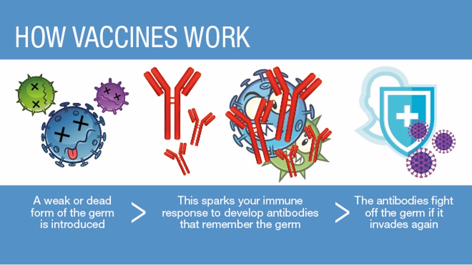
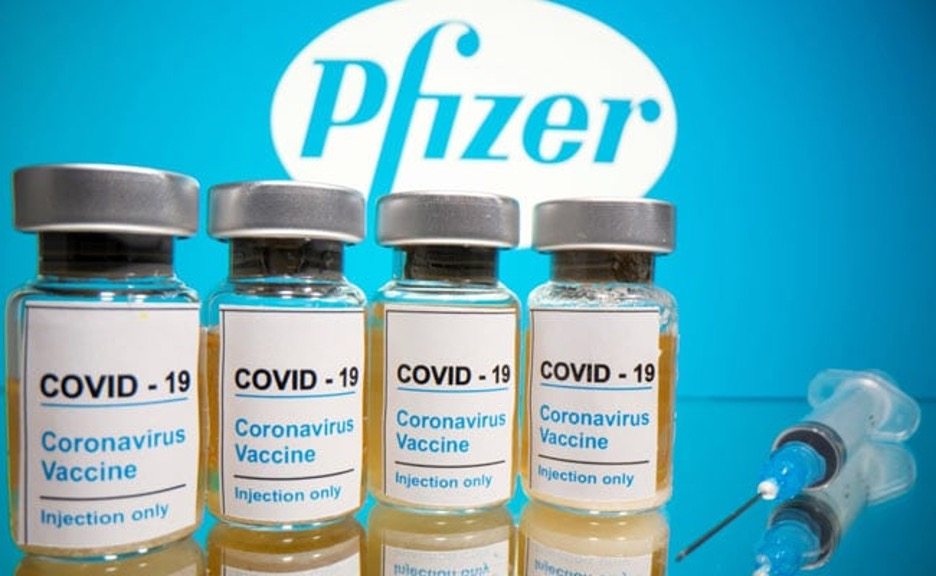
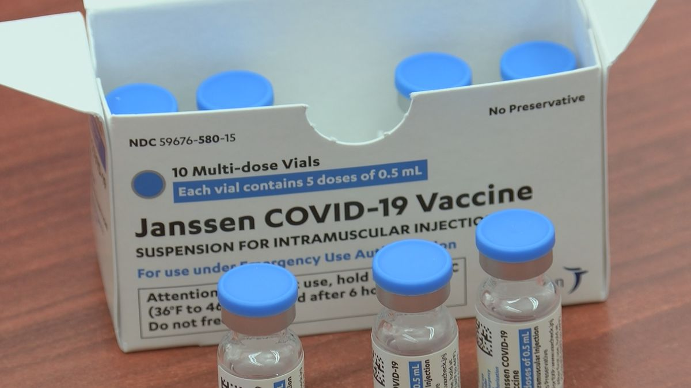

Vaccination Chart
This interactive chart shows the doeses of vaccines administered worldwide. You can also choose specific country to view more details about vaccine distriution.
How Vaccines Work
To understand how COVID-19 vaccines work, it helps to first look at how our bodies fight illness. When germs, such as the virus that causes COVID-19, invade our bodies, they attack and multiply. This invasion, called an infection, is what causes illness. Our immune system uses several tools to fight infection. Blood contains red cells, which carry oxygen to tissues and organs, and white or immune cells, which fight infection. Different types of white blood cells fight infection in different ways
- Macrophages are white blood cells that swallow up and digest germs and dead or dying cells. The macrophages leave behind parts of the invading germs called antigens. The body identifies antigens as dangerous and stimulates antibodies to attack them.
- B-lymphocytes are defensive white blood cells. They produce antibodies that attack the pieces of the virus left behind by the macrophages.
- T-lymphocytes are another type of defensive white blood cell. They attack cells in the body that have already been infected.
The first time a person is infected with the virus that causes COVID-19, it can take several days or weeks for their body to make and use all the germ-fighting tools needed to get over the infection. After the infection, the person’s immune system remembers what it learned about how to protect the body against that disease.
The body keeps a few T-lymphocytes, called memory cells, that go into action quickly if the body encounters the same virus again. When the familiar antigens are detected, B-lymphocytes produce antibodies to attack them. Experts are still learning how long these memory cells protect a person against the virus that causes COVID-19.
COVID-19 vaccines help our bodies develop immunity to the virus that causes COVID-19 without us having to get the illness. Different types of vaccines work in different ways to offer protection, but with all types of vaccines, the body is left with a supply of “memory” T-lymphocytes as well as B-lymphocytes that will remember how to fight that virus in the future. It typically takes a few weeks for the body to produce T-lymphocytes and B-lymphocytes after vaccination. Therefore, it is possible that a person could be infected with the virus that causes COVID-19 just before or just after vaccination and then get sick because the vaccine did not have enough time to provide protection. Sometimes after vaccination, the process of building immunity can cause symptoms, such as fever. These symptoms are normal and are a sign that the body is building immunity.
Pfizer-BioNTech
Side Effects
Side effects that have been reported with the Pfizer-BioNTech COVID-19 Vaccine include:
- injection site pain
- tiredness
- headache
- muscle pain
- chills
- join pain
- fever
- injection site swelling
- injection sote redness
- nausea
- feeling unwell
- swollen lymph nodes (lymphadenopathy)
- non-severe allergic reactions such as rash, itching, hives, or swelling of the face
- severe allergic reactions
There is a remote chance that the Pfizer-BioNTech COVID-19 Vaccine could cause a severe allergic reaction. A severe allergic reaction would usually occur within a few minutes to one hour after getting a dose of the Pfizer-BioNTech COVID-19 Vaccine. For this reason, your vaccination provider may ask you to stay at the place where you received your vaccine for monitoring after vaccination. Signs of a severe allergic reaction can include:
- Difficulty breathing
- Swelling of your face and throat
- A fast heartbeat
- A bad rash all over your body
- Dizziness and weakness
These may not be all the possible side effects of the Pfizer-BioNTech COVID-19 Vaccine. Serious and unexpected side effects may occur. Pfizer-BioNTech COVID-19 Vaccine is still being studied in clinical trials.
Ingredients
The Pfizer-BioNTech COVID-19 Vaccine includes the following ingredients: mRNA, lipids ((4-hydroxybutyl)azanediyl)bis(hexane-6,1-diyl)bis(2-hexyldecanoate), 2 [(polyethylene glycol)-2000]-N,N-ditetradecylacetamide, 1,2-Distearoyl-sn-glycero-3- phosphocholine, and cholesterol), potassium chloride, monobasic potassium phosphate, sodium chloride, dibasic sodium phosphate dihydrate, and sucrose.
Administration of Vaccine
The Pfizer-BioNTech COVID-19 Vaccine will be given to you as an injection into the muscle. The Pfizer-BioNTech COVID-19 Vaccine vaccination series is 2 doses given 3 weeks apart. If you receive one dose of the Pfizer-BioNTech COVID-19 Vaccine, you should receive a second dose of this same vaccine 3 weeks later to complete the vaccination series. In an ongoing clinical trial, the Pfizer-BioNTech COVID-19 Vaccine has been shown to prevent COVID-19 following 2 doses given 3 weeks apart. The duration of protection against COVID-19 is currently unknown. The Pfizer-BioNTech COVID-19 Vaccine is an unapproved vaccine. In clinical trials, approximately 20,000 individuals 16 years of age and older have received at least 1 dose of the Pfizer-BioNTech COVID-19 Vaccine.
Moderna
Side Effects
Side effects that have been reported with the Moderna COVID-19 Vaccine include:
- Injection site reactions: pain, tenderness and swelling of the lymph nodes in the same arm of the injection, swelling (hardness), and redness
- General side effects: fatigue, headache, muscle pain, joint pain, chills, nausea and vomiting, and fever
There is a remote chance that the Moderna COVID-19 Vaccine could cause a severe allergic reaction. A severe allergic reaction would usually occur within a few minutes to one hour after getting a dose of the Moderna COVID-19 Vaccine. For this reason, your vaccination provider may ask you to stay at the place where you received your vaccine for monitoring after vaccination. Signs of a severe allergic reaction can include:
- Difficulty breathing
- Swelling of your face and throat
- A fast heartbeat
- A bad rash all over your body
- Dizziness and weakness
These may not be all the possible side effects of the Moderna COVID-19 Vaccine. Serious and unexpected side effects may occur. The Moderna COVID-19 Vaccine is still being studied in clinical trials.
Ingredients
The Moderna COVID-19 Vaccine contains the following ingredients: messenger ribonucleic acid (mRNA), lipids (SM-102, polyethylene glycol [PEG] 2000 dimyristoyl glycerol [DMG], cholesterol, and 1,2-distearoyl-sn-glycero-3-phosphocholine [DSPC]), tromethamine, tromethamine hydrochloride, acetic acid, sodium acetate, and sucrose.
Administration of Vaccine
In an ongoing clinical trial, the Moderna COVID-19 Vaccine has been shown to prevent COVID-19 following 2 doses given 1 month apart. The duration of protection against COVID-19 is currently unknown. When you receive your first dose, you will get a vaccination card to show you when to return for your second dose of the Moderna COVID-19 Vaccine. Remember to bring your card when you return.

Johnson & Johnson’s Janssen
Side Effects
Side effects that have been reported with the Janssen COVID-19 Vaccine include:
- Injection site reactions: pain, redness of the skin and swelling.
- General side effects: headache, feeling very tired, muscle aches, nausea, and fever.
There is a remote chance that the Janssen COVID-19 Vaccine could cause a severe allergic reaction. A severe allergic reaction would usually occur within a few minutes to one hour after getting a dose of the Janssen COVID-19 Vaccine. For this reason, your vaccination provider may ask you to stay at the place where you received your vaccine for monitoring after vaccination. Signs of a severe allergic reaction can include:
- Difficulty breathing,
- Swelling of your face and throat,
- A fast heartbeat,
- A bad rash all over your body,
- Dizziness and weakness.
These may not be all the possible side effects of the Janssen COVID-19 Vaccine. Serious and unexpected effects may occur. The Janssen COVID-19 Vaccine is still being studied in clinical trials.
Ingredients
The Janssen COVID-19 Vaccine includes the following ingredients: recombinant, replication-incompetent adenovirus type 26 expressing the SARS-CoV-2 spike protein, citric acid monohydrate, trisodium citrate dihydrate, ethanol, 2-hydroxypropyl-β-cyclodextrin (HBCD), polysorbate-80, sodium chloride.
Benefits
In an ongoing clinical trial, the Janssen COVID-19 Vaccine has been shown to prevent COVID-19 following a single dose. The duration of protection against COVID-19 is currently unknown
